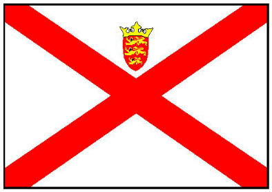
La couleu d'Jèrri d'pis l'7 d'Avri 1981
La couleu d'Jèrri est blianche auve eune rouoge crouaix diagonale et, à haut, l'êtchusson des trais léopards coêffi dg'ieune couronne.
La couleu qué j'faîsons sèrvi en Jèrri ach'teu fut officiellement haûlîndgie pouor la preunmié fais lé 7 d'Avri mil neu chents huiptante'tch'ieune. Nou-s'a ajouôté l'êtchusson Jèrriais, auve eune couronne, à la rouoge crouaix traditionnelle.
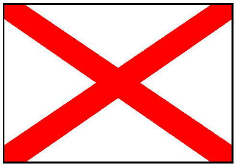
La vielle couleu d'Jèrri
Y'a un mystéthe entouor l'originne d'la couleu Jèrriaise. Y'a les cheins tchi disent qu'les Hollandais fîtent eune faute dé traduction sus les chartes dé couleurs maritînmes dé difféthents pays, et tch'il' ont mêlé l'Irlande et Jèrri. Et né v'là pouortchi j'avons la crouaix d'Saint Patrick. Chutte explyicâtion né nouos aîgue pon à comprendre comment qu'les Jèrriais éthaient peu adopter eune couleu seulement s'lon eune faute Hollandaise. Né v'chîn chein tch'êcrivit George d'la Forge entouor ch't' explyicâtion en mil neu chents souaixante neuf:
| 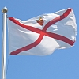 | 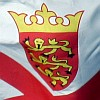 | 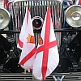 | 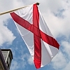 | 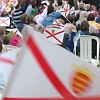 |
La couleu d'Jèrri
San Antonio, Texas,
Moussieu l'Rédacteu,
Quand j'tais à montrer les nouvieux tîmbres d'Jèrri à un anmîn ichîn en Améthique l'aut' jour, il en 'tait tout à fait êprîns. I' n'pouvait pon en r'vénîn qu'eune île si p'tite comme la nôtre pouvait affaûrder à produithe dé tchi si bé, et il 'tait êmèrvilyi, étout, qu'la Reine pèrment à l'Île d'aver ses propres tîmbres. En r'gardant l'chein d'chîn ch'lîns, tchi montre lé portrait d'la Chambre d's Êtats, il appèrchut la couleu tch'est pendue en d'ssus d'la tchaîse dé Moussieu l'Bailli, et, en admithant les trais léopards en or dessus, i' m'dit: "Tchi belle couleu tch'il' ont, les Jèrriais! Ch'est seux qu'nou la vait au haut d'touos les mâts dans l'Île!" "Nou-fait dgia!" j'li dis, "Ch'est drôle d'aver à vouos l'dithe, mais la couleu adoptée par l'Île dépis longtemps est la crouaix d'St. Patrice - en rouoge sus blianc!" "Bon!", i' m'dit, "n'en v'là, eune drôle d'affaithe! Les Jèrriais, tchi sont si louoyaux à la Couronne d'Angliétèrre, ont adopté la crouaix d'St. Patrice, patron d'Irlande - tchi dêteste l's Angliais - pour lus couleu?" "Ch'est r'mèrquabl'ye," j'li dis, "mais ch'est d'même!"
J'mé sis souvent d'mandé pourtchi qué l's autorités en Jèrri n'ont janmais fait autcheune chose pour changi eune couôteunme tcvh'est, à m'n idée, riditchule. La couleu tch'est en d'ssus d'la tchaîse du Bailli dans la Chambre d's Êtats dév'thait êt' la couleu d'Jèrri! J'avons les trais léopards sus nouos sou, nouos êtchussons et l'sciau d'nouot' bailliage. Et, j'mé r'souveins, sus l'însîngne dé la Milice Rouoyale dé Jèrri quand j'tais soudard dans l'Bataillon du Ouest. Et à ch't heu sus nouos tîmbres. Mais nouot' couleu est la crouaix tchi r'présente l'Irlande!
J'ai 'té assez tchuthieux pour êprouver à dêcouvri comment qu' ch'là s'est fait, mais i' pathait qu'l'originne dé s'n adoption en Jèrri n'est pon trop bein connue. Dans san livre "Lé Baillage dé Jèrri" rédigi par Moussieu l'Député Philip M. de Veulle), lé Révérend G. R. Balleine nouos dit qué l'Mâjeur Rybot, dé mémouaithe respectée, tch'avait fait des r'chèrches au sujet, avait dêcouvèrt qué dans un livre en Angliais, publiyé en mil sept chent huiptante-trais par un Moussieu Bowles et tchi donne un accompte des couleurs dé navithes dé toutes les nâtions, i' s'appèrchut qu'eune couleu sus l'mât d'un navithe Hollandais, dé tchi qu'un portrait avait 'té dessinné en mil sept chent chînq, avait l'nom "IERSE" d'ssus, et i' pense qué chu nom-là fut întèrprété comme voulant dithe Jèrri. Mais l'portrait des navithes Hollandais avait 'té copié dé d'ssus cèrtaines vielles cartes d'mil sept chent chînq faites par un nommé Carel Allard, ou par lé nommé van Kuelen vèrs les mil sept chent vîngt, et ch'ti-chîn avait êcrit "IERSE" en d'ssus d'la couleu et "IRLANDOIS" en d'ssous, évidemment pensant qué ch'tait la couleu d'Irlande.
Dans la langue Hollandaise, nouos dit l'Mâjeur Rybot, lé mot pour "Irlande" et "IERSCHE", ch'est en tchi i' n'pathait pon y'aver fort dé doute qué les navithes sus ches vièrs portraits-là 'taient Irlandais, mais qué l'mot pathaissait assez comme lé nom d'nouot' Île pour qué tchitchuns l'adoptîssent comme étant les nouôtres, et la mêprînse a 'té continnuée pour pus d'chent chînquante ans!
J'sommes, comme mé l'disait l'Abbé Le Légard, lé grand savant d'l'Abbaye d'La Lucerne, quand i' vînt en Jèrri ch't êté, la seule partie d'la Nouormandie tchi n'est pon souos l'joug d'la France, et les priviligiés d'la Couronne d'Angliétèrre dépis bein des siècl'yes, et j'avons eune couleu tchi r'présente pûtôt l'Irlande qué Jèrri, la Nouormandie ou l'Angliétèrre! À m'n idée, il est grand temps d'prendre les m'suthes nécessaithes pour adopter la vraie couleu qué j'dév'thions, comme bouans Jèrriais, êt' ordgilleurs dé haûlîndgi au haut du mât à la pliaiche dé la crouaix d'St. Patrice, et tchi montre les léopards qué j'sommes ordgilleurs dé montrer sus nouos sou, nouos êtchussons et nouos tîmbres, et qué même la Grande Brétangne - dé tchi nouot' Duc est la Reine - montre sus ses armeûthies!
J'avons-t-i' assez d'vièrs Jèrriais dans l's Êtats aujourd'aniet pour proposer l'adoption d'eune couleu tch'est Jèrriaise, Nouormande, et en même temps Britannique, pour en rempliaichi ieune tchi r'présente pûtôt l'Irlande qué Jèrri? Jé n'crai pon qu'Sa Majesté la Reine èrfus'sait d'approuver l'changement. Et i' n'est pon bésoin d'aller bein liain pour un patron. La couleu en d'ssus du siège dé Moussieu l'Bailli dans la Chambre Législative est exactément l'patron voulu! Nou n'pouôrrait pon faithe mus qué d'la copier, et Mêssieus les Membres d's Êtats n'ont qu'à garder l'yi sus sa bieauté pour l's encouothagi à l'adopter. Et jé s'sais si ordgilleu d'la vaie adoptée dévant qu'nou piêsse mett' ma poutchie d'vièrs os souos la bliête!
George d'la Forge
| 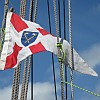 | 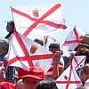 | 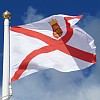 | 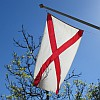 | 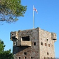 |
Mais eune carte fut publiée en France en mille sept chents chînquante six tchi mouontrait la couleu d'Jèrri et l'app'lait "Pavillon de Jersey", et ch'fut vîngt-sept ans dévant la publyicâtion des cartes dêcrites par l'Mâjeur Rybot, et bein d's années dévant l'adoption d'la rouoge crouaix comme symbôle dé l'Ordre d'St. Patrick.
Y'a d'aut's gens tchi craient qu'la crouaix dgiagonale 'tait eune variâtion d'la crouaix d'Saint George pouor mouontrer la neutralité des navithes Jèrriais duthant les dgèrres entre l'Angliétèrre et la France.
Un traîsième avis dit qu'eune rouoge crouaix sus un blianc fond est un sîmpl'ye symbôle tchi éthait peu êt' adopté dans deux pays sépathés.
Un quatrième avis suggéthe qu'la rouoge crouaix 'tait un vièr symbôle Nouormand - nou vait des rouoges crouaix dans la Tapiss'sie d'Bayeux - et qu'la fanmil'ye Fitzgerald d'originne Nouormande (fis Gerald) portit chutte couleu en Irlande où'est qu'lé symbôle fut adopté pour l'Ordre d'St. Patrick et pis ajouôté à la couleu Britannique, l"Union Jack". Viyant qu'la couleu est d'originne Nouormande s'lon chutte théorie, il est hardi pôssibl'ye qu'Jèrri fait sèrvi chutte couleu d'pis la Contchête Nouormande.
À ches drein nou-s'a fait des r'chèrches en Irlande tchi mouontrent qu'la rouoge Crouaix d'St. Patrice 'tait considéthée coumme un nouvieauté et eune chose d'êtrangiéthe quand l'Ordre dé St. Patrice fut fondé en 1783. D's articl'yes dans des gâzettes à Dublin à ch't'êpoque-là cont'naient d's ardguments tout à fait critiques entouor chutte dêcision. Nou disait qu'la rouoge crouaix 'tait la Crouaix d'St. André et qu'ou 'tait Êcossaise et pas du mains Irlandaise. Nou faisait sèrvi la rouoge crouaix pouor l'symbôle d'l'Ordre dé St. Patrice, et en 1801 la rouoge crouaix fut ajouôtée au Union Jack.
Y'a bein des gens et des spécialistes entouor les couleurs en Irlande tchi n'craient pon qu'la rouoge crouaix ait janmais 'té un symbôle Irlandais mais qu'oulle eûsse 'té imposée par l's autorités Britanniques. Si la rouoge crouaix n'avait pon 'té faite sèrvi coumme couleu en Irlande avant 1801 - ou au pus tôt en 1783, coumme tchi qu'les Jèrriais éthaient peu l'copier?
Né v'la eune tchestchion d'logique!
Mais laîssons les théories historiques. Ouaithe qu'les Jèrriais eûssent fait sèrvi la couleu duthant au mains deux siècl'yes, ou n'avait janmais 'té adoptée officiellement, et nou criyait qu'ou n'tait pon assèz distîndgie pouor èrprésenter l'Île.
Né v'chîn chein tch'a êcrit George d'la Forge dans sa lettre du tchînze dé mai mil neu chent septante-six publiée dans la gâzette du sé:
"En pâlant d'couleurs, i' m'veint à l'idée tchi'i' y'a longtemps qué j'sis à êprouver à pèrsuader tchique Membre d's Êtats dé proposer d'changi la couleu d'Jèrri à chein qu' ou dév'thait être: Les trais léopards dé Nouormandie. La cheinne tch'est au haut du siège du Bailli dans la Chambre d's Êtats est mangnifique. À m'n idée ch'est stupide dé continnuer à appeler la crouaix d'St. Patrice la couleu d'Jèrri quand ch'est en réalité la couleu Irlandaise. J'avons les trais léopards dé Nouormandie sus nouos sou, sus l'sceau d'nouot' bailliage, sus hardi d'nouos timbres et sus nouos dotchûments officiels. Pouortchi pon sus nouot' couleu?"

Ch'fut dans l'année jubilaithe d'mil neuf chent septante sept qu'nou-s'a décidé d'adopter eune nouvelle couleu. I' n'y avait pon d'eunnanînmité entouor la proposition. Bein des gens criyait qu'i' n'tait pon nécessaithe d'changi la couleu. D'aut's 'taient d'avis tchi vaudrait mus adopter la vielle banniéthe Nouormande auve les deux léopards.
...Et l'portrait d'l'artiste dans la Chambre d's Etats, tchi nouos dit qué ieune des raîsons pour tchi tch'i' chouaîsit un cèrtain coin dans la Chambre pour peindre lé portrait d'la Reine est viyant qu'nou vait la "Jersey Flag", est acouo eune raîson d'pus pour adopter les trais léopards pour la couleu d'Jèrri. Jé n'peux pon m'înmaginner eune couleu pus belle et pus apte qué chette-là!
George d'la Forge
JEP 22/3/1979
...Comme d'habitude, la preunmié chose 'tait d'èrgarder les décès, mais i' n'y'en avait qu'deux tchi m'ont frappé. Lé preunmyi 'tait l'Cap'taine Tessier-Yandell. J'n'ai pon ieu l'honneu dé l'connaître pèrsonnellement, mais j'ai ieu d'la correspondance auve li au sujet d'la Couleu d'Jèrri dévant tch'il êcrivîsse sa fanmeuse articl'ye à chu sujet dans la gâzette y'a un an. Jé n'étions pon du même avis, car il 'tait en faveur dé justifier la couleu d'à ch't heu - la crouaix d'St. Patrice - et j'sis en faveur d'adopter les trais léopards tchi sont sus l'sceau d'nouot' baillage, nouos sou, nouos dotchûments officiels et nouos tîmbres, mais ses lettres étaient charmantes et d'bouanne heunmeu. Un vrai moussieu, l'Cap'taine, et j'ai r'gret d'vaie san décès dans la gâzette.
En pâlant d'la Couleu d'Jèrri, j'sis ravi d'vaie qu'autchun membre né s'est pon 'couo d'menté d'am'ner l'affaithe dévant L's Etats. J'éthais pourtant aimé vaie les trais léopards au haut du mât d'vant mouothi!
George d'la Forge
JEP 2/5/1979
Après d'longues distchussions, l's Êtats votîtent pouor changi la couleu. La nouvelle couleu fut approuvée par l's Êtats lé douze dé juîn mil neuf chent septante neuf. Y'avait deux Députés tchi votîtent contre.
George d'la Forge n'tait pon heutheux quand i' ouït qu'les Êtats allaient voter pouor la nouvelle couleu. Eune lettre publiée dans la gâzette du sé lé sept dé juîn mil neuf chent septante neuf.
La Couleu d'Jèrri
Le Ménage és Feuvres.
Moussieu l'Rédacteu.
J'tais bein content d'vaie, dans la gâzette du 29 dé mai, qué L's Etats s'en vont, à la fîn, considéther l'adoption d'eune nouvelle couleu pour Jèrri.
Comme ou l'savez bein, y'a d's années qué j'mentionne lé sujet dans mes lettres. J'ai tréjous dit qué lé fait qu' j'avons les trais léopards sus l'sceau dé nouot baillage, sus nouos dotchûments officiels, sus nouos sou et nouos tîmbres est eune bouanne raîson pour les aver sus nouot' couleu étout, et j'sis bein content d'vaie tch'i'sont montrés dans l'portrait tch'est dans la gâzette. Mais j'sis d's'appointé d'vaie qu'la crouaix d'St Patrice est acouo sus la couleu et qué les léopards sont dans un p'tit êtchusson en d'ssus du mitan d'la crouaix à la pliaiche d'êt sus l'entchi d'la couleu.
Eune chose tchi m'étonne est qu'la gâzette mentionne la crouaix sus la couleu comme étant la crouaix d' St André. Ch'n'est pon la crouaix d'St. André - ch'est la crouaix d'St. Patrice. S'ou n'mé criyiz pon, ou n'avez qu'à consulter vouot' Encyclopédie Britannique. l' vouos ditha qué la crouaix d'St Patrice est "A saltire gules on a field argent". V'la tchi veurt dithe eune rouoge crouaix sus du blianc. Et la crouaix d'St André est "Azure, a saltire argent" tchi veurt dithe eune crouaix sus du bliu. Et tout ch'là est bein explyitchi dans l'livre "English Heraldry" par Charles Boutell, MA (eune autorité bein connue), un livre qu'ou pouvez vaie et consulter dans ma biblyiothèque si ou n'en avez pon iun d'amain.
Mén idée a trèjous 'té d'prendre la banniéthe en d'ssus d'la tchaise à Moussieu I'Bailli dans la Chambre d's Etats comme patron pour la nouvelle couleu d'Jérri. Dans san vivant, lé Cap'taine Tessier-Yandell, un charmant moussieu dé mémouaithe respectée tch'êcrivit un mangnifique rapport entouorre chu sujet dans la gâzette l'année pâssée (ou ch'tait-i' l'annee dé d'vant?), mé ramémouaithit qué les léopards sus la banniéthe n'étaient pon nécessaithement des léopards Nouormands - tch'il' 'taient des lêopards dessinnés par feu lé Majeur NVL Rybot. Eh bein, a m'n idée, ch'est bein aîsi d'aver un portrait des vrais léopards Nouormands dé l'Abbé Marcel Le Légard ou d'aut' savants dé la Nouormandie.

Chein tchi m'gêne est que d'après l'rapport dans la gâzette, Moussieu l'Gouvèrneux et les présidents d'Conmités d's Etats ont dèja approuvé la couleu montrée dans la gâzette. V'la tchi veurt dithe qu' les membres d's Etats, n'ayant pon veu d'aut' portraits altèrnatifs, pouorraient l'accepter sus l'coup quand l'affaithe veindra sus l'tapis. A m'n idee ché s'sait danmage d'aller si vite auprès aver attendu si longtemps pour mett' l'affaithe en allant. I' m'sembl'ye tchi vaudrait mus examinner et considéther plusieurs dessîns.
Et pourtchi însister d'garder la crouaix d'St Patrice sus nouot couleu? Ou r'présente l'Irlande, un pays tchi n'nouos aime pon fort! Comme bouans Anglo-Nouormands, n'est i' pon la chose d'adopter les léopards dé Nouormandie comme l'objet prîncipal dé nouot' couleu à la pliaiche dé lus donner eune toute pétite pliaiche dans un êtchusson ombré par la crouaix d'St. Patrice?
Pis nou-s'attendait pouor l'atchiêscement d'la Reine, not' Duc, et nou-s'attendait hardi..... Ch'fut lé dgix dé dézembre mil neuf chent huiptante qu'la procliamâtion d'la Reine fut donnée.
Y'a acouo des gens tchi n'sont pon satisfaits auve la couleu, mais l'ardgument sembl'ye êt' dêcidé.
J'avons acouo eune couleu qu'nou peut vaie sus les batchieaux d's Etats d'Jèrri. Né v'chîn un portrait d'la couleu du baté pouor la protection d'la pêque "Norman Le Brocq":
Y'a l'êtchusson d'Jèrri sus un bliu fond auve l'Union Jack dans la carre. Au c'menchement du vîngtchième siècl'ye l's Êtats voulaient aver eune couleu pouor lé baté "Duke of Normandy" et d'mandit pèrmission à l'Amithauté. Mais l'Amithauté n'pouvait pon trouver si la couleu d'Jèrri et l'êtchusson 'taient officiels. Un tas d'lettres c'menchîtent à cirtchuler entré l'Bailli, lé Lieut'nant-Gouvèrneux et l's autorités à Londres. Enfîn, l'Rouai Douard VII donnit la pèrmission à l'Île d'continnuer d'faithe sèrvi l'êtchusson et eune couleu fut autorisée lé d'Mar 1907 pouor lé baté d's Êtats. Achteu j'avons trais batchieaux - "Duke of Normandy", "Duchess of Normandy" et "Norman Le Brocq" - et ches'-chîn sont les seurs à pouver haûlîndgi chutte couleu.
|
|
|
|
|
|
|
Lé Lieut'nant-Gouvèrneux a sa couleu à li tch'est l'Union Jack (la couleu Britannique, ou la couleu d'l'Unnion) auve l'êtchusson sus eune blianche cèrcl'ye et entouothé d'eune couronne dé fielles. Nou peut vaie chutte couleu sus la vaituthe officielle et siez l'Gouvèrneux à Government House (La Maîson du Gouvèrneux).
|
Né v'chîn la couleu rouoyale tchi fliottait sus l'Par Howard Davis, quand la Reine, not' Duc, vîsitit Jèrri lé 13 dé Juilet 2001.
|
|
|
|
|
|
|
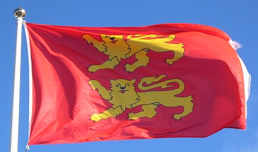
les deux léopards
Siez nos couôsîns Nouormands nou peut vaie des couleurs auve deux léopards (tchi sont pus ou mains officielles) mais y'en a tchi préfèthent haûlîndgi des couleurs auve les trais léopards - la couleu préféthée dé George d'la Forge. Nou dit qu'la couleu à trais léopards est pus “Nouormande” qué l'aut' et qu'les trais léopards r'présentent toute la Nouormandie - auve les îles étout.
Les Nouormands ont acouo eune couleu - eune doubl'ye crouaix d'or sus un rouoge fond. Chutte-chîn a nom la couleu d'Saint Olav, et viyant qu'ch'est coumme les couleurs Scandinaves, ou nos ramémouaithe qu'les Nouormands vîntent d'ches pays-là dans les touos anciens temps.
Nou vait ches couleurs Nouormandes duthant les fêtes - sustout la Fête des Rouaisouns.
La couleu d'St. Hélyi
Les Pâraîsses dé Jèrri ont lus couleurs étout - des banniéthes héraldiques d'lus êtchussons - qu'nou vait sus, ou d'vant, les Salles Parouaîssiales.
| 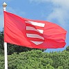 | 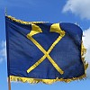 | 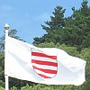 | 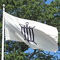 | 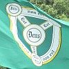 | 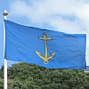 | 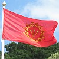 |